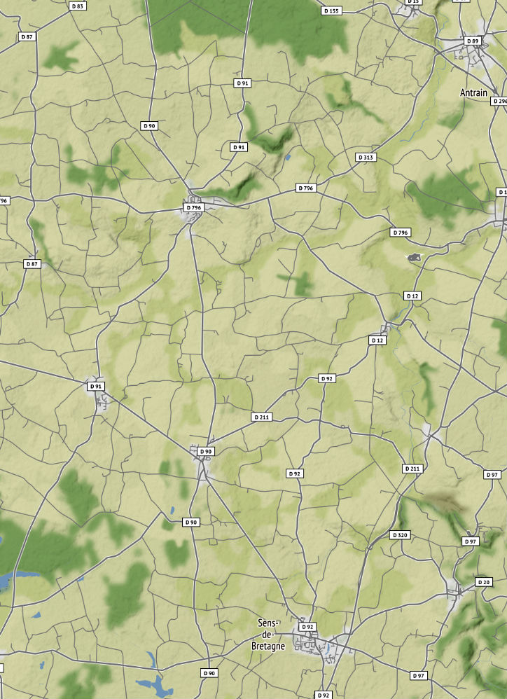

21km est un service logistique de proximité à destination des paysans et consommateurs situés sur un même territoire.
Le service permet de livrer directement les consommateurs grâce à des rondes logistiques mutualisées et optimisées.
Développement des circuits courts sur les territoires
Amélioration des revenus des producteurs
Diminution importante de l'empreinte carbone